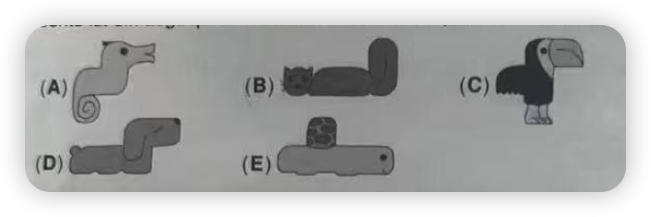
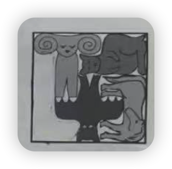

哪一块拼图能填入空缺处？


双箭头可以同时指向哪两个数字？
(A) 11 和 19
(B) 11 和 23
(C) 13 和 19
(D) 13 和 23
(E) 19 和 23
迷宫中哪两个数字之间可以画出一条连通路径？
(A) 1 和 3
(B) 2 和 4
(C) 2 和 6
(D) 3 和 5
(E) 3 和 6
12枚硬币写着1到12，9枚正面朝上如图所示。缺失的数字中最大的是哪个？
(A) 5
(B) 6
(C) 7
(D) 8
(E) 9
最短是紫色，绿色和红色一样长，蓝色比黄色短。哪支是蓝色？
(A) A
(B) B
(C) C
(D) D
(E) E
哪一块可以插入图形中，使得形成一条连续的铺砖小路？
每只怪兽要么有1只眼睛4条腿，要么有3只眼睛2条腿。合计9只眼睛16条腿。家族里有多少只怪兽？
(A) 9
(B) 8
(C) 7
(D) 6
(E) 5
露丝从正前方看棋盘上的积木塔，高塔会遮住后面矮塔。她能看到多少座塔？
(A) 8
(B) 9
(C) 10
(D) 11
(E) 12
艾拉按箭头方向跳格子，每个格子恰好经过一次。她必须从哪个格子出发？
(A) A1
(B) B3
(C) C2
(D) D2
(E) A3
三张正方形纸叠放后沿虚线剪开，法比安现在有多少个正方形？
(A) 5
(B) 6
(C) 7
(D) 8
(E) 9